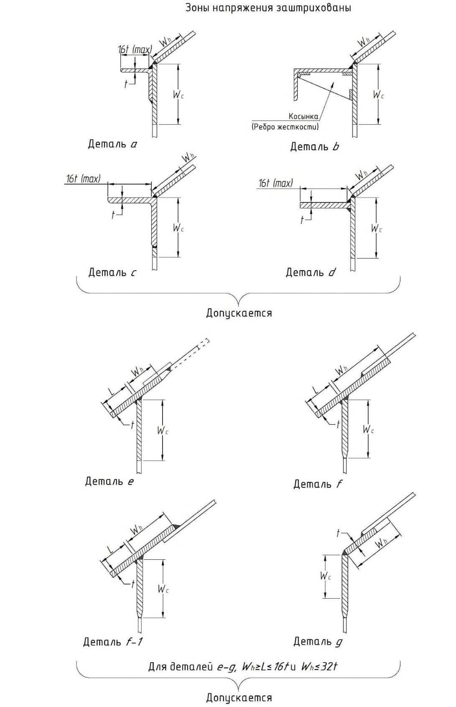
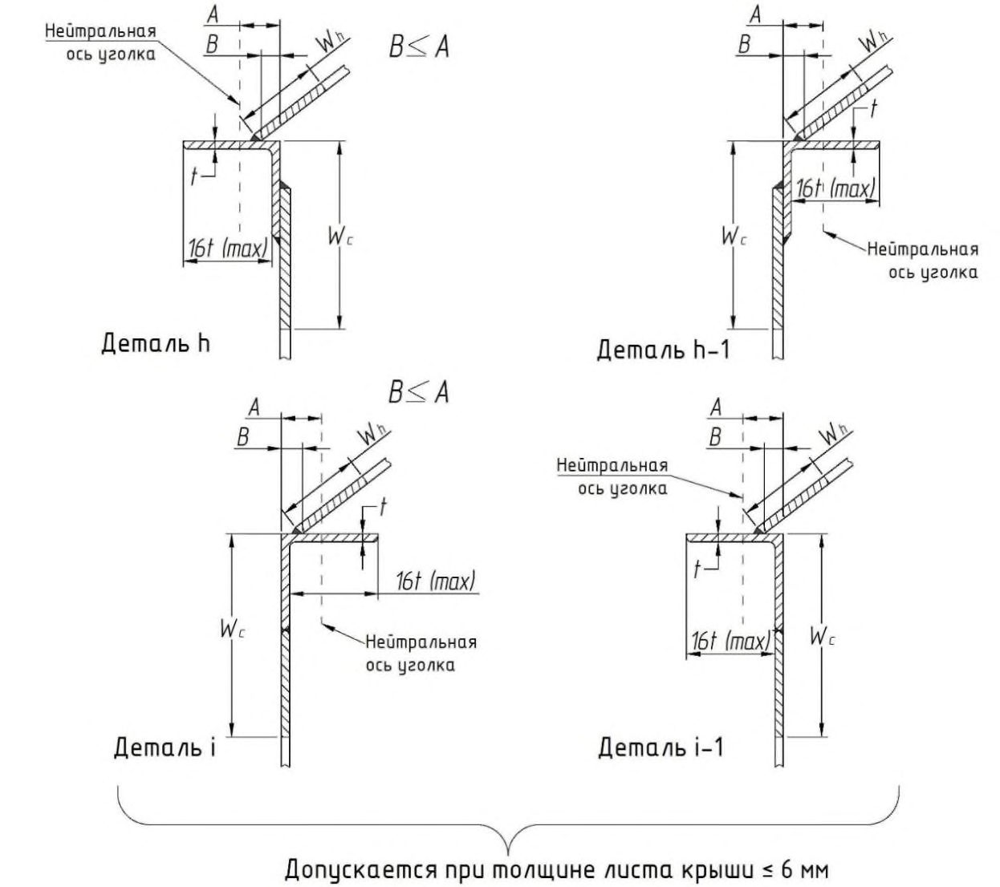
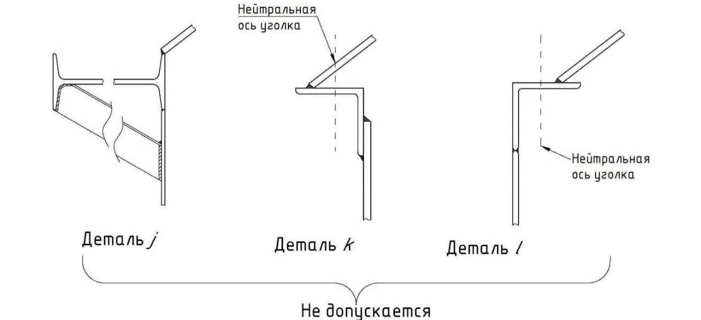

СП 495.1325800.2020 «Резервуары изотермические для хранения сжиженных газов. Пра»
О документе: разработчики, утверждение, регистрация, ключевые слова
Издание официальное
1 ИСПОЛНИТЕЛЬ - Общество с ограниченной ответственностью «НПК Изотермик» (ООО «НПК Изотермик»)
2 ВНЕСЕН Техническим комитетом по стандартизации ТК 465 «Строительство»
3 ПОДГОТОВЛЕН к утверждению Департаментом градостроительной деятельности и архитектуры Министерства строительства и жилищнокоммунального хозяйства Российской Федерации (Минстрой России)
4 УТВЕРЖДЕН приказом Министерства строительства и жилищнокоммунального хозяйства Российской Федерации от 30 декабря 2020 г. № 916/пр и введен в действие с 1 июля 2021 г.
5 ЗАРЕГИСТРИРОВАН Федеральным агентством по техническому регулированию и метрологии (Росстандарт)
6 ВВЕДЕН ВПЕРВЫЕ
В случае пересмотра (замены) или отмены настоящего свода правил соответствующее уведомление будет опубликовано в установленном порядке. Соответствующая информация, уведомление и тексты размещаются также в информационной системе общего пользования - на официальном сайте разработчика (Минстрой России) в сети Интернет
© Минстрой России, 2020
Настоящий нормативный документ не может быть полностью или частично воспроизведен, тиражирован и распространен в качестве официального издания на территории Российской Федерации без разрешения Минстроя России
Дата введения - 2021-07-01
УДК 624.953 ОКС 91.080.10
Ключевые слова: резервуары изотермические, сжиженный газ, хранение сжиженных газов, требования к расчетам изотермических резервуаров
| ИСПОЛНИТЕЛЬ ООО«НПК Изотермик» Руководитель организации-разработчика Генеральный директор, д-р техн. наук | ИСПОЛНИТЕЛЬ ООО«НПК Изотермик» Руководитель организации-разработчика Генеральный директор, д-р техн. наук | Х.М. Ханухов |
|---|---|---|
| Руководитель разработки | Заместитель генерального директора | Н.В. Четвертухин |
| Исполнитель: | Начальник расчетно- аналитического отдела, канд. физ-мат. наук | А.В. Алипов |
| Исполнитель: | Начальник проектно- конструкторского | А.Р. Чернобров |
| Исполнитель: | Руководитель группы | А.В. Коломыцев |
| Исполнитель: | Старший инженер | Д.С. Горбовский |
Введение
Настоящий свод правил разработан в целях обеспечения соблюдения требований Федерального закона от 30 декабря 2009 г. № 384-ФЗ «Технический регламент о безопасности зданий и сооружений».
Свод правил разработан в развитие положений СП 16.13330.2017 «СНиП II-23-81* Стальные конструкции», СП 20.13330.2016 «СНиП 2.01.07-85* Нагрузки и воздействия», СП 43.13330.2012 «СНиП 2.09.03-85 Сооружения промышленных предприятий», ГОСТ 27751-2014 Надежность строительных конструкций и оснований и содержит требования к расчету и проектированию стальных изотермических резервуаров.
Свод правил выполнен авторским коллективом ООО «НПК Изотермик» (д-р техн. наук Х.М. Ханухов, канд. физ-мат. наук А.В. Алипов, Н.В. Четвертухин, А.Р. Чернобров, А.В. Коломыцев, Д.С. Горбовский ).
СЖИЖЕННЫХ ГАЗОВ Правила проектирования
Isothermal tanks for storage of liquefied gases. Design rules
1Область применения
2Нормативные ссылки
В настоящем своде правил использованы нормативные ссылки на следующие документы:
СП 1325800.2020
ГОСТ 9.104-2018 Единая система защиты от коррозии и старения. Покрытия лакокрасочные. Группы условий эксплуатации
ГОСТ 9.402-2004 Единая система защиты от коррозии и старения. Покрытия лакокрасочные. Подготовка металлических поверхностей к окрашиванию
ГОСТ 3242-79 Соединения сварные. Методы контроля качества
ГОСТ 7350-77 Сталь толстолистовая коррозионно-стойкая, жаростойкая и жаропрочная. Технические условия
ГОСТ 7512-82 Контроль неразрушающий. Соединения сварные. Радиографический метод
ГОСТ 10499-95 Изделия теплоизоляционные из стеклянного штапельного волокна. Технические условия
ГОСТ 10832-2009 Песок и щебень перлитовые вспученные. Технические условия
ГОСТ 19281-2014 Прокат повышенной прочности. Общие технические условия
ГОСТ 21631-2019 Листы из алюминия и алюминиевых сплавов. Технические условия
ГОСТ 21880-2011 Маты из минеральной ваты прошивные теплоизоляционные. Технические условия
ГОСТ 27751-2014 Надежность строительных конструкций и оснований. Основные положения
ГОСТ 27772-2015 Прокат для строительных стальных конструкций. Общие технические условия
ГОСТ 33949-2016 Изделия из пеностекла теплоизоляционные для зданий и сооружений. Технические условия
ГОСТ 34233.2-2017 Сосуды и аппараты. Нормы и методы расчета на прочность. Расчет цилиндрических и конических обечаек, выпуклых и плоских днищ и крышек
ГОСТ 34337-2017 Стекловолокно. Маты. Общие технические требования и методы испытаний
ГОСТ Р ИСО 17637-2014 Контроль неразрушающий. Визуальный контроль соединений, выполненных сваркой плавлением
ГОСТ Р 55724-2013 Контроль неразрушающий. Соединения сварные. Методы ультразвуковые
ГОСТ Р 58915-2020 Прокат толстолистовой из криогенных сталей. Технические условия
СП 16.13330.2017 «СНиП II-23-81* Стальные конструкции» (с изменениями № 1, № 2)
СП 20.13330.2016 «СНиП 2.01.07-85* Нагрузки и воздействия» (с изменениями № 1, № 2)
СП 22.13330.2016 «СНиП 2.02.01-83* Основания зданий и сооружений» (с изменениями № 1, № 2, № 3)
СП 24.13330.2011 «СНиП 2.02.03-85 Свайные фундаменты» (с изменениями № 1, № 2, № 3)
- СП 25.13330.2012 «СНиП 2.02.04-88 Основания и фундаменты на вечномерзлых грунтах» (с изменениями № 1, № 2, № 3, № 4)
СП 28.13330.2017 «СНиП 2.03.11-85 Защита строительных конструкций от коррозии» (с изменениями № 1, № 2)
- СП 43.13330.2012 «СНиП 2.09.03-85 Сооружения промышленных предприятий» (с изменениями № 1, № 2)
СП 61.13330.2012 «СНиП 41-03-2003 Тепловая изоляция оборудования и трубопроводов» (с изменением № 1)
СП 131.13330.2018 «СНиП 23-01-99*Строительная климатология»
СП 296.1325800.2017 Здания и сооружения. Особые воздействия (с изменением № 1)
Примечание - При пользовании настоящим сводом правил целесообразно проверить действие ссылочных документов в информационной системе общего пользования - на официальном сайте федерального органа исполнительной власти в сфере
СП 1325800.2020
стандартизации в сети Интернет или по ежегодному информационному указателю «Национальные стандарты», который опубликован по состоянию на 1 января текущего года, и по выпускам ежемесячно издаваемого информационного указателя «Национальные стандарты» за текущий год. Если заменен ссылочный документ, на который дана недатированная ссылка, то рекомендуется использовать действующую версию этого документа с учетом всех внесенных в данную версию изменений. Если заменен ссылочный документ, на который дана датированная ссылка, то рекомендуется использовать версию этого документа с указанным выше годом утверждения (принятия). Если после утверждения настоящего свода правил в ссылочный документ, на который дана датированная ссылка, внесено изменение, затрагивающее положение, на которое дана ссылка, то это положение рекомендуется применять без учета данного изменения. Если ссылочный документ отменен без замены, то положение, в котором дана ссылка на него, рекомендуется применять в части, не затрагивающей эту ссылку. Сведения о действии сводов правил можно проверить в Федеральном информационном фонде стандартов.
3Термины, определения и сокращения
- 3.1.1 аварийный разлив продукта
- Поступление продукта в межстенное пространство резервуара при повреждении внутреннего корпуса.
- 3.1.2 внутренний корпус изотермического резервуара
- Герметичный вертикальный цилиндрический стальной корпус или негерметичный вертикальный цилиндрический стальной корпус-стакан, концентрически расположенный внутри наружного корпуса изотермического резервуара.
- 3.1.3 герметичность
- Способность оболочки (корпуса), отдельных ее элементов и соединений препятствовать газовому или жидкостному обмену между средами, разделенными этой оболочкой.
- 3.1.4 захолаживание
- Процесс контролируемого охлаждения резервуара перед его вводом в эксплуатацию.
- 3.1.5 изотермический резервуар
- Резервуар для хранения сжиженных газов при температуре кипения и давлении, близком к атмосферному, состоящий из концентрически расположенных внутреннего и наружного стальных корпусов.
- 3.1.6 межстенное пространство
- Пространство между стенками внутреннего и наружного корпусов изотермического резервуара.
- 3.1.7 наружный корпус изотермического резервуара
- Герметичный вертикальный цилиндрический стальной корпус, расположенный снаружи внутреннего корпуса изотермического резервуара.
- 3.1.8 наружная крыша
- Стационарный каркасный сферический купол наружного корпуса резервуара с герметичным покрытием.
- 3.1.9 подвесная крыша
- Конструктивная часть изотермического резервуара полного сдерживания, представляющая собой паропроницаемую металлическую конструкцию с системой ребер жесткости, подвешенную к наружной крыше над внутренним корпусом-стаканом.
- 3.1.10 рабочее избыточное давление газа
- Максимальное внутреннее избыточное давление в резервуаре, образующееся при испарении сжиженного газа при нормальном протекании рабочего процесса, включающем предусмотренный проектом темп отбора газа на повторное сжижение или на факел.
- 3.1.11 рабочий объем резервуара
- Объем продукта между минимальным и максимальным уровнями залива при эксплуатации резервуара.
- 3.1.12 разгерметизация резервуара
- Нарушение герметичности, приводящее к проникновению газа или жидкости из изотермического резервуара в окружающее пространство.
- 3.1.13 расчетная температура
- Температура, при которой должны определяться физико-механические характеристики металла корпуса резервуара для расчета на прочность.
- 3.1.14 расчетное избыточное давление
- Давление, при котором должен проводиться расчет резервуара на прочность.
- 3.1.15 риск аварии
- Мера опасности, характеризующая возможность возникновения аварии на опасном производственном объекте и тяжесть ее последствий.
- 3.1.16 соседний объект
- Объект, находящийся на удалении от изотермического резервуара, достаточном для теплового воздействия от него, в случае пожара.
- 3.1.17 хлопун
- Местное отклонение начальной формы стенки, днища или других элементов конструкции, обращенное выпуклостью наружу, образовавшееся в результате воздействия монтажно-сварочных напряжений. ИР - изотермический резервуар; КИПиА - контрольно-измерительные приборы и автоматика; МКЭ - метод конечных элементов; НДС - напряженно-деформированное состояние; ПАЗ - противоаварийная автоматическая защита; ППР - проект производства работ; СПГ - сжиженный природный газ.
4Классификация изотермических резервуаров
- малотоннажные - объем продукта менее 5 000 м³ ;
- среднетоннажные - объем продукта от 5 000 м³ , но менее 60 000 м³ ;
- крупнотоннажные - от 60 000 м³ и выше.
- «одинарного сдерживания», включает:
- внутренний силовой корпус, рассчитанный на сдерживание гидростатического давления жидкости;
- наружный герметичный корпус, рассчитанный на сдерживание избыточного давления газа над жидкостью, но не рассчитанный на аварийный разлив продукта;
- «двойного сдерживания», включает:
- силовой корпус;
- открытую защитную ограждающую стенку (или закрытую навесом от попадания атмосферных осадков), рассчитанную на сдерживание аварийного разлива продукта по территории предприятия;
- «полного сдерживания», включает два силовых корпуса, концентрически расположенных один в другом, каждый из которых предназначен для сдерживания гидростатического давления жидкости:
- наружный корпус герметичен и рассчитан на сдерживание давления газа;
- внутренний корпус может быть, как герметичным, т.е. иметь собственную герметичную стационарную крышу, так и негерметичным и изготавливаться с паропроницаемой подвесной крышей, закрепленной на подвесках к крыше наружного корпуса ИР.
СП 1325800.2020
- с купольной самонесущей герметичной крышей внутреннего корпуса;
- с подвесной паропроницаемой крышей внутреннего корпуса.
5Общие положения
5.1Расчетные формулы
Для основных листовых конструкций ИР из материалов типа IV (9 % никелевая сталь) и типа VI (высокомарганцовистая сталь с содержанием марганца 15 % -35 %) следует t исп принимать не менее 8,0 мм.
Припуск на коррозию, технологические операции и минусовое предельное отклонение по толщине проката не учтены в расчетных формулах.
- расчет по формулам, приведенным в настоящем своде правил;
- численный расчет НДС и устойчивости конструкции, выполненный в программном комплексе, с введением в полученные результаты корректирующих множителей, согласующих численное решение и коэффициенты запаса (надежности), принятые в расчетных формулах.
Расчет по формулам и численный расчет могут быть использованы как по отдельности, так и совместно, для получения наиболее надежных результатов.
Численное моделирование может осуществляться с использованием как условно упругой, так и упруго-пластической модели деформирования материала.
5.2Избыточное давление
СП 1325800.2020
5.3Расчетная температура
- при определении прочностных характеристик материалов;
- расчете изменения размеров конструкций;
- захолаживании/расхолаживании ИР;
- расчете на прочность с учетом температурных воздействий;
- теплотехнических расчетах.
При выполнении теплотехнических расчетов температуру окружающей среды учитывают при вычислении тепловых потоков через элементы конструкции ИР: стенку, крышу и днище.
где θ2 приращения температуры, °С, (среднесуточные колебания температуры), принимают по таблице 13.2 СП 20.13330.2016; θ4 - добавка к расчетной температуре за счет влияния солнечной радиации, °С, вычисляют по формуле
где ρ - коэффициент поглощения солнечной радиации наружной поверхностью резервуара, для металлических поверхностей, ρ = 0,65;
S max - максимальное количество солнечной радиации, Вт·ч/м² ; k - коэффициент для металлических поверхностей, k = 0,7.
6Оценка риска при выборе конструкции резервуара
Внутренние факторы риска связаны с наличием скрытых дефектов и повреждений сварных соединений, коррозионным состоянием конструкций, наличием межкристаллитной коррозии и возможностью хрупкого разрушения и т.п.
- нарушение условий эксплуатации (технологического режима приема, хранения или отгрузки продукта), которое может привести к отклонению нагрузок от проектных значений, например, к резкому возрастанию внутреннего давления, угрожающему разрушением конструкции;
- нарушения в работе сопутствующего оборудования (компрессоров, насосов, предохранительных клапанов, элементов факельной системы), которые могут привести к отклонению нагрузок от проектных значений и разрушению конструкции ИР;
- аварийные внешние воздействия: тепловое воздействие при пожаре на соседних объектах, действие воздушной ударной волны, падение твердых предметов на поверхность ИР при взрыве на соседних объектах и другие возможные воздействия согласно СП 296.1325800.
- идентификация опасностей и количественная оценка риска аварий ИР с учетом воздействия поражающих факторов на персонал, население, имущество и окружающую среду;
- обоснование оптимальных вариантов размещения ИР с учетом расположения объектов производственной и транспортной инфраструктуры, особенностей окружающей местности, территориальных зон (охранных, санитарно-защитных, жилых, общественно-деловых, рекреационных);
- определение степени опасности аварий для выбора наиболее безопасных проектных решений;
- обоснование, корректировка и модернизация организационных и технических мер безопасности;
- разработка мер по снижению риска аварий.
СП 1325800.2020
Таблица 6.1 Частота разгерметизации резервуаров с проливом содержимого во внешнюю среду
| Частота разгерметизации, год -1 | Частота разгерметизации, год -1 | Частота разгерметизации, год -1 | Частота разгерметизации, год -1 | |
|---|---|---|---|---|
| Полное разрушение | Полное разрушение | Частичное разрушение | Частичное разрушение | |
| Тип резервуара | Мгновенный выброс всего объема продукта в окружающую среду | Мгновенный выброс всего объема продукта в межстенное пространство | Продолжительный выброс в окружающую среду через отверстие диаметром 10 мм | Продолжительный выброс в межстенное пространство через отверстие диаметром 10 мм |
| ИР одинарного сдерживания жидкости | От 5 . 10 -6 до 1 . 10 -5 | - | 5 . 10 -7 | - |
| ИР двойного сдерживания жидкости | 5 . 10 -7 | 5 . 10 -7 | - | 1 . 10 -4 |
| Резервуар полного сдерживания с двумя купольными крышами | 5 . 10 -8 | 5 . 10 -7 | - | 1 . 10 -4 |
| Резервуар полного сдерживания с купольной наружной и подвесной внутренней крышами | 1 . 10 -8 | - | - | - |
При разрушении наружного корпуса ИР по причине аварийного повышения внутреннего давления или внешней причине сжиженный газ остается во внутреннем корпусе ИР. Такая конструкция является наиболее безопасной и при внешнем воздействии (внешний взрыв, ударная нагрузка от аварийного падения оборудования, локальный пожар снаружи и т.п.).
7Требования к материалам и конструкциям
- I - низколегированная кремний-марганцевая сталь;
- II - низколегированная кремний-марганцевая сталь для работы при низких температурах;
- III - никелевая сталь с содержанием никеля 3,5 %-7,5 %;
- IV - 9 % никелевая сталь;
- V - аустенитная нержавеющая сталь.
Соответствие между хранимым в ИР продуктом и типом стали определяют по таблице 7.1.
СП 1325800.2020
Таблица 7.1 Соответствие между хранимым в ИР продуктом и типом стали
| Тип стали | Тип стали | Температура хранимого продукта, °С | Минимальная рабочая температура стали, °С | |
|---|---|---|---|---|
| Продукт | ИР одинарного сдерживания | ИР двойного или полного сдерживания | Температура хранимого продукта, °С | Минимальная рабочая температура стали, °С |
| Бутан | II | I | Минус 10 | Минус 35 |
| Аммиак | II | II | Минус 35 | Минус 80 |
| Пропан/пропилен | III | II III | Минус 50 | Минус 80 |
| Этан/этилен | IV V | III IV V | Минус 104 | Минус 104 |
| СПГ | IV V | IV V | Минус 163 | Минус 165 |
- 1) горячекатаная сталь в термически обработанном или в термомеханически обработанном состоянии (состояние поставки определяет заказчик и указывает в спецификации);
- 2) содержание углерода не более 0,20 %; углеродный эквивалент стали C экв не должен превышать 0,43, определяется по формуле
Таблица 7.2 Массовая доля элементов стали типа III по анализу промышленной выплавки
| Элементы | C , % макс. | Si , % макс. | Mn , % | P , % макс. | S , % макс. | Mo , % макс. | Ni , % | V , % макс. |
|---|---|---|---|---|---|---|---|---|
| Содержание | 0,10 | 0,35 | 0,30 - 0,80 | 0,015 | 0,005 | 0,10 | 3,5 - 7,0 | 0,01 |
Примечания
1 Для изготовления ИР допускается использовать прокат из стали марки 0Н6Б (тип III) согласно техническим характеристикам, установленным в ГОСТ Р 58915.
2 Содержание химических элементов, не указанных в таблице, не нормируется.
Таблица 7.3 Массовая доля элементов стали типа IV по анализу промышленной выплавки
| Элементы | C , % макс. | Si,% макс. | Mn,% | P,% макс. | S,% макс. | Mo , % макс. | Ni,% | V , % макс. |
|---|---|---|---|---|---|---|---|---|
| Содержание | 0,10 | 0,35 | 0,30-0,80 | 0,015 | 0,005 | 0,10 | 8,5-10,0 | 0,01 |
Примечания
1 Для изготовления ИР допускается использовать прокат из стали марки 0Н9 (тип IV) согласно техническим характеристикам, установленным в ГОСТ Р 58915.
2 Содержание химических элементов, не указанных в настоящей таблице, не нормируется.
СП 1325800.2020
Таблица 7.4 Требования к определению значений ударной вязкости сталей
| Тип стали | Ударная вязкость KCV, Дж/см² ,не менее | Температура испытаний на ударную вязкость KCV, °С |
|---|---|---|
| I 1) | 27 | Минус 35 |
| II 1) | 27 | Минус 80 |
| III 2) | 27 | Минус 104 |
| IV 3) | 80 | Минус 196 |
| V | Аустенитная нержавеющая сталь, соответствующая требованиям, установленным в ГОСТ 7350-77 (таблица 2), группа сталей 12Х18Н9 - 08Х18Н12Т. | Аустенитная нержавеющая сталь, соответствующая требованиям, установленным в ГОСТ 7350-77 (таблица 2), группа сталей 12Х18Н9 - 08Х18Н12Т. |
1) Для проката из стали классов С355-С590 (тип I и II) допускается определять значения KCV согласно ГОСТ 27772-2015 (таблица 4) при температурах испытаний ниже указанных в таблице 7.4 (минус 40 °С и минус 60 °С) и для проката категории 20 из стали марок 09Г2С и 09Г2С-1 (тип II) - согласно ГОСТ 19281-2014 (приложение Б, пункт Б.18).
- 2) Для проката из стали марки 0Н6Б (тип III) допускается определять значения норм работы удара KV, Дж, согласно ГОСТ Р 58915-2020 (таблица 3).
- 3) Для проката из стали марки 0Н9 (тип IV) допускается определять значения норм работы удара KV, Дж, согласно ГОСТ Р 58915-2020 (таблица 3). 3. 7.3 Требования для материала стального каркаса купольного покрытия аналогичны требованиям к материалам основных листовых конструкций. 4. 7.4 Требования к материалам подвесной крыши
Ограждающую конструкцию подвесной крыши следует выполнять из стали типов II - V или из алюминиевого сплава по ГОСТ 21631, соответствующего следующим требованиям:
- условный предел текучести должен быть не менее 125 МПа;
- временное сопротивление должно превышать условный предел текучести не менее чем в 1,45 раза;
- относительное удлинение после разрыва стандартного образца должно быть не менее 15 %.
Минимальная расчетная температура материала подвесной крыши должна быть не выше расчетной температуры хранимого продукта.
Закладные детали и вставки необходимо выполнять из углеродистой или хладостойкой стали в зависимости от типа стали присоединяемой конструкции. При использовании одной закладной детали для конструкций из углеродистой и хладостойкой стали, закладную деталь следует изготавливать из хладостойкой стали.
Анкеры предназначены для исключения подъема окрайки днища резервуара под действием внутреннего давления, ветра и сейсмического воздействия.
Допускаемое растягивающее напряжение в анкерах Ra, МПа, определяют через расчетное сопротивление материала анкеров по пределу текучести Ry, кПа. Для нормальной эксплуатации Ra = 0,5 Ry , для режима испытаний Ra = 0,85 Ry .
Для сварки хладостойкой стали типов III и IV применяют сварочные материалы на никелевой основе, обеспечивающие заданные ниже требования.
Величина энергии разрушения металла сварного шва и зоны термического влияния при температуре минус 196 °C, средняя по трем стандартным поперечным образцам, должна быть не менее 55 Дж.
Три образца из каждого комплекта должны быть испытаны на ударную вязкость.
Прочностные характеристики металла шва и зоны термического влияния должны быть не менее 70 % от требуемых характеристик для основного металла, что необходимо учитывать при расчетах.
Для сварки углеродистых сталей должны применяться сварочные материалы, имеющие характеристики не менее требуемых для основного
СП 1325800.2020
металла по пределу текучести, временному сопротивлению и ударной вязкости.
8Требования к сварке и контролю качества при изготовлении и строительстве изотермических резервуаров
8.1Требования к сварке металлоконструкций изотермических резервуаров
- высокую производительность и экономическую эффективность сварочных процессов с учетом объемов выполнения сварки;
- высокий уровень однородности и сплошности металла сварных соединений с учетом конкретных условий и требуемого уровня комплекса механических свойств: прочности, пластичности, твердости, ударной вязкости и хладостойкости;
- минимальный уровень деформаций свариваемых металлоконструкций резервуара.
- требуемую геометрическую точность металлоконструкций резервуара, включая меры по компенсации или подавлению термодеформационных процессов усадки сварных швов, которые могут привести к потере устойчивости тонкостенной оболочки корпуса резервуара и образованию вмятин и выпуклостей его поверхности;
- требуемую точность сборки элементов;
- пространственную неизменяемость конструкций в процессе их укрупнительной сборки и установки в проектное положение;
- требуемое качество подготовки и сборки под сварку свариваемых кромок.
- геометрические параметры кромок элементов, подготовленных под сварку (значение угла скоса кромок, зазор в стыке, значение притупления, смещение кромок), должны укладываться в поле допусков, предусмотренных проектом;
- поверхность кромок, и прилегающие к ним зоны шириной 20 мм необходимо зачищать от любых загрязнений;
- сборочные приспособления, закрепляющие кромки свариваемых элементов, должны обеспечивать достаточную прочность и жесткость и исключать чрезмерную усадку швов и перемещения свариваемых элементов.
СП 1325800.2020
8.2Требования к контролю качества при изготовлении и строительстве
Таблица 8.1 Предельные отклонения геометрических параметров элементов конструкции
| Наименование показателей | Значение предельного отклонения |
|---|---|
| Стенки | Стенки |
| Отклонение величин радиусов внутренней и наружной стенок резервуара на уровне днища | ±20 мм |
| Отклонение высоты стенок резервуара от проектной высоты | ±20 мм |
| Местные плавные отклонения от радиусов, перегибы в кольцевом направлении в зонах вертикальных швов стенок резервуара * | ±20 мм |
| Днища | Днища |
| Отклонения от горизонтали наружных контуров готовых днищ незаполненного резервуара: ** - разность отметок смежных точек контуров днищ на расстоянии 6 м по периметру; - любых других точек | 20 мм 50 мм |
| Купольная крыша | Купольная крыша |
| Разность отметок поверхности балок аналогичных узлов в кольцевом направлении | 60 мм |
- визуально-измерительный контроль всех сварных соединений резервуара;
- контроль герметичности (непроницаемости) сварных швов;
- капиллярный метод (цветная дефектоскопия), магнитопорошковая дефектоскопия для выявления поверхностных дефектов с малым раскрытием;
СП 1325800.2020
- физические методы для выявления наличия внутренних дефектов: радиография или ультразвуковая дефектоскопия;
- гидравлические и пневматические прочностные испытания конструкции резервуара.
- мероприятиям по обеспечению прочности и устойчивости конструкций в процессе монтажа;
- качеству сборочно-сварочных работ;
- видам и объемам пооперационного контроля качества работ;
- безопасности и охраны труда;
- охране окружающей среды.
Таблица 8.2 Предельные отклонения радиусов стенок (внутреннего или наружного корпуса) ИР
| Внутренний диаметр стенки резервуара D , м | Предельные отклонения радиуса, мм |
|---|---|
| D ≤12 | ±12 |
| 12< D ≤45 | ±19 |
| 45< D ≤70 | ±25 |
| 70< D | ±30 |
Таблица 8.3 Предельные отклонения профиля стенок (внутреннего или наружного корпуса) ИР
| Толщина листа е , мм | Предельные отклонения, мм |
|---|---|
| е ≤ 12,5 | 16 |
| 12,5 < е ≤ 25 | 13 |
| 25 < е | 10 |
СП 1325800.2020
шаблоном с радиусом кривизны, равным проектному радиусу измеряемой цилиндрической оболочки и полубазой 350 мм. Предельные допускаемые значения угловатости приведены в таблице 8.4.
Таблица 8.4 Предельная угловатость в местах сварки
| Толщина листа е , мм | Предельные отклонения, мм |
|---|---|
| е ≤ 12,5 | 12 |
| 12,5 < е ≤ 25 | 9 |
| 25 < е | 6 |
Таблица 8.5 Предельная депланация в вертикальных сварных соединениях
| Толщина листа е , мм | Предельные отклонения, мм |
|---|---|
| е ≤ 15 | 1,5 |
| 15 < е ≤ 30 | 10 %от е |
| 30 < е | 3 |
9Основные расчетные положения
9.1Методы расчета и коэффициенты надежности
Расчеты должны проводиться для режимов монтажа, гидропневмоиспытаний, эксплуатации и вывода из эксплуатации. Для режима вывода из эксплуатации проводят расчет на устойчивость внутренней стенки ИР с засыпной теплоизоляцией с учетом увеличения давления сыпучей среды и компенсационных матов при расхолаживании ИР.
СП 1325800.2020
9.2Нагрузки и воздействия
Таблица 9.1 Возможные расчетные сочетания нагрузок
| Нагрузки | Нагрузки | Нагрузки | Нагрузки | Нагрузки | Нагрузки | Нагрузки | Нагрузки | Нагрузки | |
|---|---|---|---|---|---|---|---|---|---|
| Сочетание нагрузок | Постоянная нагрузка | Гидроиспытания | Пневмоиспытания | Гидростатическое давление продукта | Внутреннее давление | Вакуум* | Временная нагрузка на крышу | Снеговая нагрузка | Ветровая нагрузка |
| Нагрузки при строительстве | X | - | - | - | - | - | Х | Х | Х |
| Нагрузки при выводе из эксплуатации | X | - | - | - | - | - | - | Х | Х |
| Нагрузки при испытаниях | X | X | X | - | - | - | - | - | - |
| Эксплуатационные нагрузки (внутренний корпус ИР пустой) | X | - | - | - | X | X | X | X | - |
| Эксплуатационные нагрузки (внутренний корпус ИР полный) | X | - | - | X | X | X | X | X | - |
| Эксплуатационные нагрузки + ветер | X | - | - | X | X | X | X | X | X |
Условные обозначения:
«X» - нагрузку учитывают; «-» - нагрузку не учитывают.
* Вакуум не действует одновременно с внутренним давлением, т.е. рассматривается или внутреннее давление, или вакуум.
- воздействие на стенку резервуара плоской воздушной ударной волны от внешнего взрыва;
- воздействие температуры от пожара на соседнем объекте (существующем трубопроводе горючего газа);
- тепловое воздействие при утечке продукта из внутреннего корпуса ИР;
- исключение из работы любой из подвесок подвесной крыши.
9.3Нагрузки при расчете стенок изотермического резервуара на прочность и устойчивость
- 1) гидростатическое давление при эксплуатации;
- 2) гидростатическое давление при гидроиспытании;
- 3) вес стенки;
- 4) вес колец жесткости на стенке;
- 5) вес перлита в резервном пространстве над стенкой;
- 6) вес компенсирующих матов;
- 7) сила трения перлита о стенку;
- 8) боковое давление перлита.
СП 1325800.2020
Таблица 9.2 Коэффициенты надежности и условий работы
| Наименование | Обозна- чение | Значение | Нормативный документ |
|---|---|---|---|
| 1 Коэффициент надежности по ответственности сооружения | γ n | - | ГОСТ 27751 |
| 2 Коэффициент надежности по нагрузке для определения расчетного веса металлоконструкций | γ f 1 | 1,05 | СП 20.13330 |
| 3 Коэффициент надежности по материалу для стали | γ m | 1,05 | СП 16.13330 |
| 4 Коэффициент надежности по нагрузке для определения расчетного веса сыпучих материалов | γ f 2 | 1,3 | СП 20.13330 |
| 5 Коэффициент надежности по нагрузке для реактивного бокового давления перлита | γ f 3 | 1,5 | - |
| 6 Коэффициент надежности по нагрузке для угла внутреннего трения сыпучих материалов* | γ f 4 | 1,1 | - |
Таблица 9.3 Сочетания нагрузок на внутренний корпус ИР
| Сочетание нагрузок | Постоянная нагрузка | Вес компенсирующих матов | Сила трения перлита | Внешнее давление перлита | Гидроиспытания | Пневмоиспытания | Продукт |
|---|---|---|---|---|---|---|---|
| 1 Нагрузки при испытании | 1* | - | - | - | 1 | - | - |
| 2 Эксплуатационные нагрузки | 1 | 0,95 | 0,95 | 0,95 | - | - | 1 |
| * Коэффициенты сочетаний нагрузок. | * Коэффициенты сочетаний нагрузок. | * Коэффициенты сочетаний нагрузок. | * Коэффициенты сочетаний нагрузок. | * Коэффициенты сочетаний нагрузок. | * Коэффициенты сочетаний нагрузок. | * Коэффициенты сочетаний нагрузок. | * Коэффициенты сочетаний нагрузок. |
Таблица 9.4 Сочетания нагрузок на наружный корпус ИР
| Виды нагрузок | Виды нагрузок | Виды нагрузок | Виды нагрузок | Виды нагрузок | Виды нагрузок | Виды нагрузок | Виды нагрузок | Виды нагрузок | Виды нагрузок | Виды нагрузок | Виды нагрузок | |
|---|---|---|---|---|---|---|---|---|---|---|---|---|
| Сочетание нагрузок | Постоянная нагрузка | Температурные воздействия при эксплуатации | Гидроиспытания | Пневмоиспытания | Продукт | Внутреннее давление | Вакуум | Временная нагрузка на крышу | Снеговая нагрузка | Ветровая нагрузка | Утечка продукта | Взрывная волна |
| Строительство | X | - | - | - | - | - | - | - | - | - | - | - |
| Испытания | X | - | X | X | - | - | - | - | - | - | - | - |
| Эксплуатационные нагрузки (внутренний корпус ИР полный) | X | X | - | - | X | X | X | X | X | - | - | - |
| Эксплуатационные нагрузки + ветер | X | X | - | - | X | X | X | X | X | X | - | - |
| Вывод из эксплуатации | X | - | - | - | - | - | - | - | X | X | - | - |
| Утечка (все уровни) | X | X | - | - | - | X | - | - | - | Х | X | - |
| Эксплуатационные нагрузки (внутренний корпус ИР пустой) + взрывная волна | X | X | - | - | - | X | X | - | X | Х | - | X |
| Эксплуатационные нагрузки (внутренний корпус ИР полный) + взрывная волна | X | X | - | - | X | X | X | - | X | Х | - | X |
Условные обозначения: «X» - нагрузку учитывают; «-» - нагрузку не учитывают.
9.4Нагрузки на подвесную крышу
СП 1325800.2020
- собственный вес подвесной крыши и теплоизоляции на ней;
- нагрузки от оборудования и патрубков;
- нагрузки от трубопроводов, поддерживаемых подвесной крышей;
- нагрузки при строительстве.
9.5Активное давление на стенки резервуара от перлитовой засыпки
- ускорение свободного падения где γ - удельный вес перлита ( γ = ρперл g ); g ( g = 9,81 м/с 2 ); ρперл - плотность перлита, т/м³ ; ξ - гидравлический радиус; f - коэффициент трения перлита; e - основание натурального логарифма, e = 2,71828;
- коэффициент бокового давления перлита; z - расстояние от верха засыпки до расчетного уровня, м.
Гидравлический радиус ξ для ИР, в котором сыпучий материал находится между двумя стенками, вычисляют по формуле
где F - площадь поперечного сечения засыпки, м² ;
O - периметр наружной стенки, м; o - периметр внутренней поверхности засыпки, м;
R - внутренний радиус наружной стенки, м; r - радиус внешней поверхности матов с учетом деформации, м, вычисляют по формуле
где R0 - внутренний радиус внутренней стенки, м; t 1 - толщина первого пояса стенки, м; tm - толщина матов с учетом деформации после засыпки перлита, м.
Силы трения перлита о внутреннюю F тр вн и наружную F тр нар стенки и ИР, кН, определяют по формулам:
где R 2 - радиус наружной поверхности перлита, м;
СП 1325800.2020
R 1 - радиус внутренней поверхности перлита, м.
Равнодействующую силу вертикального давления перлита на уровне низа рассматриваемой секции 𝑄давл , кН, определяют по формуле
где 𝑝𝑣 - вертикальное давление перлита, кПа.
Вес перлита в межстенном пространстве над расчетным уровнем 𝑃 перл , кН, вычисляют по формуле
где Н перл - высота перлитной засыпки от уровня низа рассматриваемой секции до верха массы перлита, м.
9.6Требования к компенсационным матам
Коэффициент упругости матов должен быть не менее 0,44.
Для значения k мат = 0,44 модуль упругости Е мат = 3,266 кПа.
где L МС - ширина межстенного пространства до захолаживания, м; p 1 - давление матов на стенку резервуара при выводе ИР из эксплуатации, кПа;
∆𝑅 - изменение радиуса внутреннего резервуара при захолаживании, м;
Толщина матов должна быть не менее расчетной. Маты могут состоять из нескольких слоев.
Давление p 1, умноженное на коэффициент надежности γ f = 1,3, не должно превышать верхнее давление испытаний матов 1,68 кПа (или другое
СП 1325800.2020
верхнее значение давления испытаний конкретной марки матов). Рекомендуемое значение давления p 1 от 1,0 до 1,2 кПа.
На давление p 1 с коэффициентом надежности по нагрузке γ f = 1,3 должен проводиться расчет на устойчивость внутренней стенки ИР.
При захолаживании ИР радиус внутреннего корпуса уменьшается на величину ∆𝑅 = α ∙ ∆T ∙ 𝑅 , где α - коэффициент линейного расширения металла корпуса; ∆T -изменение температуры, ºС. При этом освободившееся межстенное пространство заполняется перлитом из резервного запаса, но его давление на стенку при этом не изменяется.
При выводе ИР из эксплуатации для технического обслуживания, обследования или при аварийной ситуации радиус внутреннего корпуса увеличивается, и межстенное расстояние сокращается на величину ∆𝑅 = α ∙ ∆𝑇 ∙ 𝑅 .
Уплотненный перлит не деформируется, деформируются только упругие маты, их толщина сокращается также на величину Δ R . При этом давление матов на перлит p 1, кПа, определяют по формуле
где ρпрод - плотность хранимого продукта, т/м³ ;
Н - высота налива, м; zi - расстояние от днища до нижней кромки i -го пояса, м; n 2 - коэффициент надежности по нагрузке для избыточного давления газа, для режима эксплуатации n 2 = 1,2, для режима гидроиспытаний n 2 = 1,25; p р.изб -расчетное внутреннее избыточное давление газа в пространстве под кровлей резервуара, кПа;
R - радиус стенки резервуара, м; с - модуль упругости стали при температуре хранения продукта, кПа;
Е 𝑡 𝑖 - толщина i -го пояса стенки, м.
9.7Требования к проектированию цилиндрических стенок изотермических резервуаров
СП 1325800.2020
- 9.7.1.1 При расчетах на прочность стенки внутреннего корпуса ИР учитывают следующие нагрузки:
- гидростатическое давление;
- внешнее давление перлита;
- весовые нагрузки;
- сила трения перлита о стенку.
Стенка внутреннего корпуса должна удовлетворять как критериям прочности при всех видах воздействий, так и критериям устойчивости.
- 9.7.1.2 Толщину i -го пояса стенки 𝑡 𝑖 , м, достаточную для обеспечения прочности при действии гидростатического и внутреннего избыточного давлений, рассчитывают для каждого пояса стенки резервуара по формуле
где γ n - коэффициент надежности по ответственности сооружения;
с - коэффициент условий работы:
- для режима хранения продукта, с = 0,7 - для первого пояса; с = 0,8 - для остальных поясов;
- для режима гидроиспытаний с = 0,9 для всех поясов в соответствии с СП 43.13330;
Sy - расчетное сопротивление материала по пределу текучести, кПа.
- 9.7.1.3 Толщина верхнего n -го пояса как для резервуара со стационарной крышей, так и для резервуара, не имеющего стационарной крыши, принимается равной не менее 40 % толщины первого пояса 𝑡𝑛 ≥ 0,4𝑡1 . Минимальная толщина любого пояса стенки ИР независимо от объема составляет 6 мм.
- 9.7.1.4 Толщина каждого i -го пояса: i = n -1, n -2 и т.д. сверху вниз назначается не менее толщины следующего за ним сверху i +1-го пояса, но так, чтобы выполнялось требование прочности (9.16).
- 9.7.1.5 Для проверки правильности назначения толщин нижних поясов стенки резервуара и их возможной корректировки рекомендуется провести расчет НДС резервуара численным методом под действием всей совокупности действующих нагрузок. Используют следующую расчетную схему:
- 1) стенка резервуара переменной толщины с кольцами жесткости, опирающаяся на днище или окрайку днища;
2) резервуар в сборе, т.е. стенка, днище и крыша.
- 9.7.1.6 Численный расчет стенки и днища, включающий расчет подъема окрайки днища под действием внутреннего давления газа, находящегося над жидкостью, следует выполнять с учетом геометрической нелинейности.
- 9.7.1.7 Критерий прочности стенки резервуара: интенсивность напряжений σ𝑖 , кПа, и абсолютные значения главных напряжений, σ1 и σ2 , кПа, не должны превышать расчетного сопротивления материала стенки по пределу текучести Sy с учетом коэффициента условий работы и коэффициента надежности:
где σ𝑥 - осевое напряжение, кПа; σ𝑦 - кольцевое напряжение, кПа; γ c =0,9 - коэффициент условий работы; γ n - коэффициент надежности по ответственности сооружения.
Главными напряжениями в данном случае являются осевые и кольцевые напряжения, так как τ xy = 0.
9.7.2 Расчет стенки внутреннего корпуса изотермического резервуара на устойчивость
СП 1325800.2020
9.7.2.1 Устойчивость стенки внутреннего корпуса обеспечена при выполнении условия:
где µ - параметр устойчивости (стенка устойчива, если μ ≤ 1) ; γ n - коэффициент надежности по ответственности сооружения; σ1 i - расчетное осевое напряжение для i -го пояса стенки, кПа; σ01 i - критическое осевое напряжение, кПа; p р - расчетное внешнее давление, кПа; p кр - критическое внешнее давление, кПа;
Р верт - расчетная суммарная вертикальная сжимающая нагрузка, кН, составляет сумму снеговой, весовых нагрузок, силы трения перлита и т.п.;
R - радиус стенки резервуара, м; t i - толщина i -го пояса стенки резервуара, м;
Сi - коэффициент, рассчитывают по формулам (9.22 - 9.24);
E - модуль упругости материала стенки резервуара, кПа;
Н экв -высота цилиндрической оболочки однородной толщины, эквивалентная по устойчивости под действием внешнего давления (по величине критического давления); t min - толщина самого тонкого пояса стенки резервуара, м; hi - толщина i -го пояса стенки резервуара, м;
Коэффициент С вычисляют по формулам
СП 1325800.2020
- 9.7.2.2 Расчетное внешнее давление 𝑝вв , кПа, при расчете на устойчивость стенки внутреннего корпуса вычисляют по формуле
где γ f =1,3 - коэффициент надежности по нагрузке. p 1 - давление, возникающее при выводе ИР из эксплуатации, кПа;
Если внутренний корпус ИР проектируется с собственной стационарной крышей, то к давлению перлита добавляют расчетный вакуум с коэффициентом надежности γ f =1,2:
где 𝑝вак - расчетный вакуум, кПа.
- 9.7.2.3 Расчетное внешнее давление 𝑝вн , кПа, при расчете на устойчивость стенки наружного корпуса вычисляют по формуле
где р ветр - давление ветра, кПа;
- 1,2 и 1,4 - коэффициенты надежности по нагрузке к вакууму и давлению ветра;
- 0,5 - коэффициент приведения давления ветра к эквивалентному вакууму.
- 9.7.2.4 При невыполнении критерия устойчивости следует провести анализ причин. При значении параметра устойчивости μ в пределах 1,0 < μ ≤ 1,5 следует либо увеличить толщину поясов стенки резервуара, либо добавить одно или несколько колец жесткости в зависимости от следующих условий:
СП 1325800.2020
- 1) если невыполнение критерия устойчивости обусловлено вертикальными нагрузками, требуется увеличение толщины верхних поясов стенки резервуара, для которых отношение σ1𝑖 σ01𝑖 близко к 1 (0,8 и более);
- 2) если невыполнение критерия устойчивости обусловлено внешним давлением, т.е. отношение 𝑝р 𝑝кр близко к 1 (0,8 и более), требуется установка промежуточных колец жесткости (дополнительно, кроме верхнего ветрового кольца).
При μ > 1,5 рекомендуется как увеличение толщины верхних поясов стенки резервуара, так и установка колец жесткости.
- 9.7.2.5 После размещения на стенке резервуара колец жесткости и определения их сечений в соответствии с 9.8 следует произвести поверочный расчет на устойчивость стенки внутреннего корпуса ИР под действием внутреннего давления и осевой силы по приведенным выше формулам. Расчет производят по секциям. Под секцией понимают часть цилиндрической оболочки, заключенной между парой колец жесткости (или днищем и кольцом жесткости). Дополнительными осевыми нагрузками в этом случае являются вес вышерасположенных секций и сила трения перлита о расположенную выше данной секции часть стенки внутреннего корпуса.
- 9.7.2.6 Формула (9.20) для расчета внешнего критического давления применима для оболочек средней длины (или секций оболочки при расчете по секциям), для которых высота оболочки или высота секции оболочки между кольцами жесткости больше половины радиуса оболочки.
Для коротких оболочек при невыполнении этого условия расчет верхнего критического давления следует проводить по общей формуле
где n - число волн в окружном направлении; ν - коэффициент Пуассона.
Выбирают значение n , при котором давление достигает минимума.
9.7.2.7 Формулы расчета верхнего критического давления (9.20), (9.28) применяют для цилиндрических оболочек с шарнирным закреплением торцов. Для стенки резервуара, у которой нижний торец опирается на окрайку днища, а верхний торец подкреплен ветровым кольцом, и, кроме того, имеются дополнительные кольца жесткости, применение указанных формул обеспечивает дополнительный запас устойчивости до 15 %. Для учета условий закрепления торцов секций оболочки допускается в расчет эквивалентной высоты вводить дополнительный корректирующий множитель 𝐻экв ∗ = 0,9𝐻экв , где Н экв вычисляют по формуле (9.21).
9.7.2.8 Расчет верхней критической нагрузки внутреннего корпуса ИР выполняют численными методами в программе, основанной на линейной теории устойчивости оболочек. Критические параметры потери устойчивости следует находить раздельно:
1) при загружении только осевой силой - напряжение σ01;
2) при нагружении только внешним давлением - критическое давление p 0 .
Критерий устойчивости μ ∗ в этом случае вычисляют по формуле
где k 1 , k 2 - коэффициенты согласования численного решения задачи устойчивости по Эйлеру (бифуркации) и экспериментальных значений критических нагрузок, учитывающие несовершенства формы оболочки, k 1 = С / 0,605, k 2 = 0,6; С - коэффициент, вычисляемый по формулам (9.22) - (9.24).
9.8Расчет сечений промежуточных колец жесткости
СП 1325800.2020
где p р - расчетное внешнее давление, кПа (МПа);
R - радиус стенки резервуара, м;
Н эквmax - эквивалентная высота оболочки толщиной t min, максимальная сверху или снизу, м; n - число волн в кольцевом направлении при потере устойчивости;
Е - модуль упругости материала, кПа (МПа).
При вычислении момента инерции в сечение кольца допускается включать части оболочки, расположенные выше и ниже кольца на высоту 16 t в каждую сторону, где t -толщина стенки обечайки в месте расположения кольца. Момент инерции находится относительно нейтральной оси такого сечения.
Число волн n * определяют по формуле
где R - радиус стенки резервуара, м;
H - высота налива, м; t - средняя толщина обечайки (секции обечайки), м.
9.9Требования к проектированию днищ резервуаров
где t a - толщина окрайки, м;
Sy - расчетное сопротивление материала окрайки днища по пределу текучести, кПа; ρпрод - плотность жидкости, т/м³ ; g = 9,81 м/с 2 - ускорение свободного падения;
Н - высота налива жидкого продукта, м.
где D - диаметр резервуара, м.
9.10Расчет пеностекла
СП 1325800.2020
9.11Требования к проектированию стационарной крыши
- равномерно распределенная нагрузка 1,2 кН/м² на расчетную площадь неподвижной крыши, воздействующая на крышу наружного корпуса ИР; эта нагрузка не должна сочетаться со снеговой нагрузкой и нагрузкой от внутреннего отрицательного давления;
- равномерно распределенная нагрузка 2,4 кН/м², воздействующая на платформы и переходные лестницы снаружи ИР;
- равномерно распределенная нагрузка 0,5 кН/м², воздействующая на подвесную крышу и платформы и переходные лестницы внутри корпуса ИР во время монтажа и обслуживания;
- сосредоточенная нагрузка 5 кН, на площадь 300 × 300 мм, прилагаемая к платформам и переходным лестницам снаружи ИР; сосредоточенная нагрузка не сочетается с равномерно распределенной;
- сосредоточенная нагрузка 1,5 кН, на площадь 300 × 300 мм, прилагаемая к подвесной крыше, платформам и переходным лестницам внутри корпуса ИР во время монтажа и обслуживания; сосредоточенная нагрузка не сочетается с равномерно распределенной нагрузкой.
- конусная;
- сферическая купольная двоякой кривизны;
- сферический ребристо-кольцевой купол типа «зонт».
где D - диаметр резервуара, м.
СП 1325800.2020
Минимальную толщину покрытия конусной крыши ИР вычисляют по формуле
где p р.изб. - расчетное внутреннее избыточное давление, кПа;
R - номинальный радиус стенки резервуара, м; α - угол конусности крыши от горизонта;
Sy - расчетное сопротивление материала по пределу текучести, кПа; φ - коэффициент прочности сварного шва:
- для одностороннего шва с усилением (валиком) при сварке только сверху φ = 0,35;
- для шва с валиками при сварке с обеих сторон φ = 0,65;
- для стыкового шва с полным проплавлением с подкладным листом или без него φ = 0,70;
- для стыкового шва с полным проплавлением и выборочным радиографическим контролем φ = 0,85;
- для стыкового шва с полным проплавлением и 100 % радиографическим контролем φ = 1.
где γ - коэффициент формы:
- для сферической крыши двоякой кривизны γ =0,5;
- для ребристо-кольцевого купола типа «зонт», состоящего из набора секторов одинарной кривизны, γ =1,0.
RR - радиус кривизны крыши, м.
где 𝑅кр - радиус кривизны крыши, м; 𝑟 - радиус стенки резервуара, м;
F - площадь сечения опорного кольца крыши, м² .
На удалении от края крыши напряжение в покрытии становится равным безмоментному напряжению в сферической оболочке. Безмоментное напряжение σ , кПа, определяют по формуле
СП 1325800.2020

Wh - эффективная ширина крыши (участок, включенный в расчет), мм;
Wс - эффективная ширина стенки (участок, включенный в расчет), мм; L - величина свеса крыши, мм; t - толщина элементов, мм
Рисунок 9.1 -Варианты исполнения опорного узла крыши резервуара
СП 1325800.2020

Wh - эффективная ширина крыши (участок, включенный в расчет), мм; W с - эффективная ширина стенки (участок, включенный в расчет), мм; t - толщина элементов, мм
Рисунок 9.2 -Варианты исполнения опорного узла крыши резервуара при толщине листа крыши ≤ 6 мм
Рисунок 9.3 - Недопустимые варианты исполнения опорного узла крыши резервуара

СП 1325800.2020
где γ с = 0,6 - коэффициент условий работы.
В площадь сечения опорного кольца F допускается включать часть крыши длиной 𝑤𝑟 = 0,6√𝑅𝑡𝑟 и часть стенки резервуара общей длиной 𝑤𝑤 = 0,6√𝑅𝑡𝑤 (рисунки 9.1, 9.2).
где p - расчетное давление, кПа;
PLR - вес стенки, крыши и всех прочих элементов (рабочих площадок, люков, теплоизоляции и т.п.), передающийся на днище через стенку, кН.
10Требования к теплоизоляционным конструкциям и материалам тепловой изоляции
- допустимый расчетный уровень интенсивности испарения сжиженного газа за счет внешнего теплопритока;
- защиту частей (материалов резервуара), не являющихся низкотемпературными, посредством поддержания у этих частей уровня допустимых температур;
- предупреждение образования льда на внешних поверхностях резервуара в любое время года.
Таблица 10.1 Тепловая изоляция ИР
| Изолируемая конструкция | Материал, изделие |
|---|---|
| Стенка резервуара | Песок перлитовый вспученный; Блоки из пеностекла; Пенополиуретан |
| Компенсационный слой | Длинномерные маты из стеклянного волокна в обкладке стеклотканью |
| Подвесная крыша | Маты из стеклянного волокна |
| Днище внутреннего корпуса (основная часть) | Блоки из пеностекла |
| Днище внутреннего корпуса (под стенкой) | Блоки из пеностекла повышенной плотности |
СП 1325800.2020
- теплоизоляционный слой из блоков пеностекла (по ГОСТ 33949), уложенных в несколько рядов по высоте;
- дополнительные слои сверху и снизу теплоизоляционного слоя, предназначенные для выравнивания поверхности до и после монтажа теплоизоляционных блоков из пеностекла;
- гидроизоляция теплоизоляционного слоя, исключающая попадание влаги в теплоизоляционные конструкции для обеспечения заданных теплоизоляционных свойств и предотвращения промерзания;
- температурные швы;
СП 1325800.2020
- опорные конструкции под стенкой внутреннего корпуса, предназначенные для распределения и передачи усилий от внутренней стенки резервуара на теплоизоляцию или наружное днище резервуара.
Опорные конструкции должны обеспечивать допустимый уровень давления на тепловую изоляцию днища.
11Требования к проектированию оснований и фундаментов изотермических резервуаров
11.1Требования к анкерным креплениям резервуара
где N - количество анкеров.
где 𝑞max - максимальное значение погонной нагрузки, кН/м; β - угол между направлением ветра и направлением на расчетную точку из центра координат на плане резервуара, град.;
R радиус наружного корпуса ИР, м;
D - диаметр наружного корпуса ИР, м.
Максимальную и минимальную нагрузку на анкеры Q , кН/м, вычисляют по формуле
где р р.изб. - расчетное внутреннее избыточное давление, кПа; p wR - давление ветра на крышу изнутри резервуара - «ветровой отсос», кПа, принимают согласно СП 20.13330;
M w - момент ветровой нагрузки на стенку резервуара, где плечо силы давления ветра - половина высоты стенки; ветровую нагрузку вычисляют согласно СП 20.13330;
W 1 - вес крыши, стенки и дополнительного оборудования, установленного на крыше и стенке, с учетом коэффициентов надежности по нагрузке для каждой из составляющих веса.
При расчете веса W 1 из номинальной толщины элементов резервуара вычитается припуск на коррозию. Вес днища и снеговую нагрузку не учитывают.
СП 1325800.2020
равномерно по периметру стенки. Расстояние между анкерами при отсутствии сейсмичности не должно превышать 3 м.
11.2Требования к фундаменту резервуара
- в пределах кольца, ограниченного радиусами 300 мм внутрь стенки внутреннего корпуса и 300 мм наружу от стенки внутреннего корпуса, отклонения верхней поверхности ростверка от средней высотной отметки между любыми точками не должны превышать ±6 мм;
- в тех же пределах отклонения от средней высотной отметки между точками, удаленными друг от друга на расстояние 10 м, не должны превышать ±3 мм;
- на всей площади ростверка любые отклонения от горизонтальной плоскости не должны превышать 15 мм.
12Требования к лестницам и площадкам
- равномерно распределенная нагрузка 2,4 кН/м² ;
- концентрированная нагрузка 5 кН, на площадь 300 × 300 мм, прилагаемая в любом месте к площадкам и лестницам.
13Требования к защите конструкций изотермического резервуара от атмосферной коррозии
СП 1325800.2020
14Требования к системам молниезащиты и заземления
15Требования к системам безопасности изотермического резервуара
- оснащение оборудования ИР системами контроля, автоматического регулирования и управления, ПАЗ, связи и оповещения об аварийных ситуациях;
- оснащение системой обеспечения пожарной безопасности;
- нанесение знаков безопасности и применение сигнальных цветов.
Библиография
- [1] Руководство по безопасности «Методические основы по проведению анализа опасностей и оценки риска аварий на опасных производственных объектах»
- [2] РД 03-495-02 Технологический регламент проведения аттестации сварщиков и специалистов сварочного производства
- [3] ПУЭ Правила устройства электроустановок (6-е, 7-е изд.)
- [4] СО 153-34.21.122-2003 Инструкция по устройству молниезащиты зданий, сооружений и промышленных коммуникаций